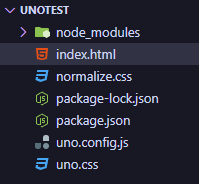
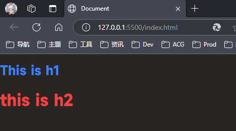

在不使用构建步骤下使用 UnoCSS CLI
在不使用构建步骤下使用 UnoCSS CLI
UnoCSS CLI 提供了一种不使用构建工具，就可以使用 UnoCSS 的方式来编写 CSS 代码的方案。
安装
新建文件夹，并使用 npm init 命令初始化项目。新建 index.html 文件。
安装 UnoCSS CLI：
1 | |
使用
项目结构：

在项目根目录下创建一个 uno.config.js 文件，内容如下：
1 | |
更多配置项见 Configuring UnoCSS。
然后在 index.html 文件中添加以下代码：
1 | |
上述代码：
<body bg-stone-800>使用了presetWind3预设，可以直接使用bg-stone-800类名来设置背景颜色。这里的类名和 TailwindCSS 是一样的<h1 text="2xl blue-500">This is h1</h1>使用了 Attributify preset 预设，可以直接使用text属性来设置字体大小和颜色。<h2 ooooohhhhhh>this is h2</h2>使用了shortcuts配置，可以直接使用ooooohhhhhh来应用配置文件中定义的样式。
此时浏览器肯定是不识别的，运行：
1 | |
会生成 uno.css 文件，然后在 index.html 文件中引入即可。

注意事项
- 如果不按照官方文档的方法，使用
watch，每次修改index.html文件后，都需要重新运行npx unocss index.html命令。 - 如需清空原有样式，需要自行引入一些 css，见 Browser Style Reset
在不使用构建步骤下使用 UnoCSS CLI
https://taylorandtony.github.io/2025/03/28/css-在不使用构建步骤下使用-UnoCSS-CLI/